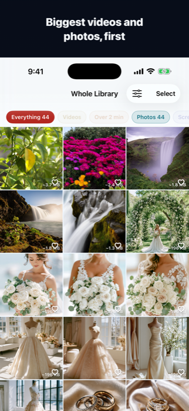
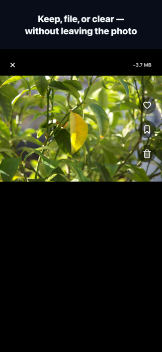
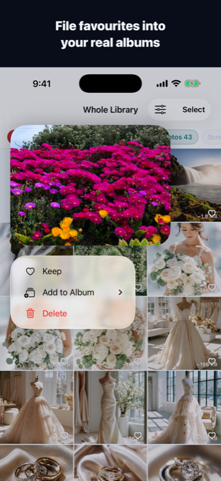

ClearSpace & Unli Disk
One photo-and-storage engine, two native appsBoth started as one project and split in two: ClearSpace is a native SwiftUI rebuild for iPhone, focused entirely on clearing photo storage. Unli Disk is the Mac app — a disk-space analyzer and cleanup tool that also carries the same photo library screen. Different names, different App Store listings, one shared on-device engine underneath. This page shows what is actually built today, not a mockup of where it's headed.
ClearSpace
Clear your photo storage without scrolling through everything. ClearSpace puts your biggest videos and photos first, lets you heart what you keep, and clears the rest — a full rewrite in Swift and SwiftUI, replacing an older React Native build.

Biggest first: the grid that sorts itself
The largest videos and photos surface first, because that's where storage actually went. Coloured filters (Videos, Over 2 Minutes, Screenshots, Live, Slo-mo) and a sort picker (biggest, newest, oldest, longest) narrow it further; a scrubber crosses the whole library in one drag, and pinch resizes the grid from seven photos across to one.

Open one full screen
Swipe sideways to move through the whole filtered set. Keep and Delete both advance to the next photo automatically. Videos and Live Photos play on press-and-hold, right there in the grid — you're never asked to judge a clip you haven't watched.

File into your real albums
Press and hold to add a photo to one of your existing Photos albums, or start a new one on the spot — these write straight to Apple Photos, not a shadow library inside the app.
The loop
- Biggest first: the largest videos and photos come first, each showing roughly what it costs.
- Heart what you keep: double-tap a photo or tap its heart. Kept photos leave the grid, so the pile only shrinks.
- Clear the rest: a running total always shows what you haven't hearted, and what it's worth.
Finding things fast
- Coloured filters: Videos, Over 2 Minutes, Screenshots, Live, Slo-mo.
- Sort and scope: biggest, newest, oldest or longest first — narrowed to a year, a month, or one of your own albums.
- Pinch and scrub: seven photos across to one, or drag the scrubber to cross the whole library in one move.
One payment, no subscription
- Finding, sorting and organising stay free: indexing, hearting, filters, albums, and single deletes are unlimited.
- One purchase unlocks bulk: clearing everything unhearted in one tap, and selecting any number of photos at once.
- No expiring trial, no bypass: the free app proves its worth first — the moment it asks for money is the moment it's earned it.
Worth knowing
- Deleting isn't instant: photos go to Recently Deleted in Photos for 30 days. Storage frees up once you empty it there — nothing is lost before that.
- Hearts are your Favourites — the same ones as in Apple Photos. Anything already favourited counts as kept.
- Sizes are close, not exact: shown with a ~, worked out on-device in an instant, which is what makes sorting by size possible at all.
- Everything stays on your phone: no account, no uploads, no analytics, no trackers.
Unli Disk
Unli Disk is the Mac side of the same work — renamed from ClearSpace to make room for ClearSpace-the-iPhone-app. It answers "where did my disk space go?" with a real, drillable map of the volume, finds what's genuinely safe to remove, and carries the same photo library screen as ClearSpace. Native Swift and SwiftUI, Apple Silicon and Intel.

Disk Map + Reclaim, one screen
The donut is built from the real top-level folders on the volume, not generic categories — Users, System, Library, Applications, each its own wedge, with a "Show reclaimable" toggle that carves out what's safe to free without a second chart. Reclaim isn't a separate tab: the same scan surfaces a "safe to remove now" total and a one-click "Select all safe", and every folder row states what fraction of it is protected by macOS and can't be measured — honesty about the unknown, not a rounded-up number.

Applications: the whole footprint
An app is rarely just its bundle. Each row adds bundle, app data and caches into one footprint, and states how much of that lives outside the bundle entirely — the part that goes unnoticed. Sort by footprint to find the weight, or by last opened to find what's stopped earning its space.

Shortcuts: the tools that already exist
One tap to Apple's own cleanup surfaces — Manage Storage, Trash, Downloads, Desktop, Time Machine, Disk Utility, iOS Backups — sitting next to shortcuts into Unli Disk's own screens and a live Memory Pressure gauge (active, compressed, system caches, swap) read straight from the kernel, no shelling out required.
The photo library is shared, not duplicated
Unli Disk's Photos tab runs on the exact same engine as ClearSpace — biggest-first
sorting, hearting, filters, timeline — packaged as Packages/UnliDiskPhotos
and shared across both platforms rather than built twice. It isn't shown here: it's
running against a real personal library on this machine, and that isn't something to
put on a public page.
Platform
Native macOS app in Swift and SwiftUI, sharing its photo engine with the iOS app via Swift Package Manager.
Sandbox migration
Moving to App Sandbox plus a user-granted disk permission (a security-scoped bookmark), replacing Full Disk Access — required for Mac App Store distribution, in progress now.
Local privacy
100% on-device. No file paths, photo metadata, or scan results ever leave the Mac.
Reversible by default
Removal is always a move to the system Trash behind a confirmation — never a silent unlink.
Planned pricing
One-time purchase, no subscription, Family Sharing enabled — same non-negotiable as every calmdownoscar app.